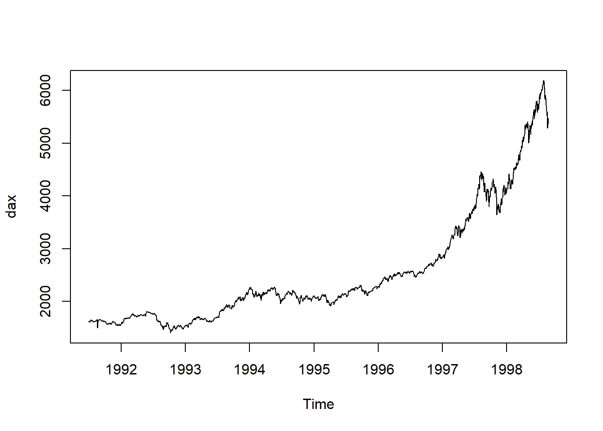

4.4 Oppgaver
4.4.1 Regresjon med en forklaringsvariabel
Oppgave 1
Forskere har brukt statistikk til å undersøke om TV-titting er forbundet med overvekt. De har samlet inn data fra 15 10-åringer om antall timer TV-titting per uke og antall kilo overvekt hos barnet (rapportert som differanse fra normalvekt). De innsamlede dataene er oppsummert i tabellen:| TV_titting | Overvekt |
|---|---|
| 42 | 17 |
| 35 | 5 |
| 28 | -1 |
| 34 | 0 |
| 37 | 13 |
| 38 | 15 |
| 32 | 5 |
| 33 | 7 |
| 18 | -7 |
| 28 | 7 |
| 36 | 6 |
| 29 | 7 |
| 29 | 4 |
| 34 | 15 |
| 18 | -5 |
Tegn et spredningsplott av resultatene. Hva tror du om forholdet mellom de to variablene utfra plottet?
Sett opp regresjonsuttrykket for å undersøke om overvekt er forbundet med overvekt. Hva er betydningen av hver parameter i uttrykket?
Estimér parameterne. Hva kan koeffisienten fortelle deg om forholdet mellom overvekt og TV-titting?
Beregn et 95 % prediksjonsintervall for overvekt i kilo for et barn som ser på TV 30 timer i uken. Hva forteller intervallet deg?
Beregn et 95 % konfidensintervall for gjennomsnittlig overvekt for barn som ser 30 timer på TV i uken. Hvordan er tolkningen av dette intervallet forskjellig fra det i oppgave d?
Hva er forventet overvekt for barn som ser 0 timer på TV i uken utfra modellen? Hva kan være problematisk ved å gjøre denne type analyser av en regresjonsmodell?
Løsning
plot(df_tv$TV_titting, df_tv$Overvekt, type = "p", xlab="TV-titting", ylab="Overvekt") Plottet viser en tydelig trend om at TV-titting og overvekt er relaterte. Dette kan vi undersøke nærmere.
Vi setter overvekt som responsvariabel og TV-titting som forklaringsvariabel. Det er ikke noen grunn til å tenke at 0 TV-titting svarer til normalvekt, så vi har med et konstantledd. Uttrykket blir da:
\[\begin{equation} \text{Overvekt} = \beta_0 + \beta_1 \text{TV-titting} + \epsilon \end{equation}\]
\(\beta_0\) er en korrigering av hvor linjen krysser andreaksen. Av spredningsplottet ser det ut som at vi ikke har data ved 0 TV-titting, det er derfor ikke fornuftig med en direkte tolkning av denne parameteren.
\(\beta_1\) forteller hvor relatert økt TV-titting er med overvekt.
Vi estimerer en regresjonsmodell fra dataene og skriver ut tabellen med resultatene:
library(stargazer)##
## Please cite as:## Hlavac, Marek (2018). stargazer: Well-Formatted Regression and Summary Statistics Tables.## R package version 5.2.2. https://CRAN.R-project.org/package=stargazerreg <- lm(Overvekt ~ TV_titting, df_tv)
stargazer(reg, type="text")##
## ===============================================
## Dependent variable:
## ---------------------------
## Overvekt
## -----------------------------------------------
## TV_titting 0.894***
## (0.160)
##
## Constant -22.212***
## (5.136)
##
## -----------------------------------------------
## Observations 15
## R2 0.706
## Adjusted R2 0.683
## Residual Std. Error 4.026 (df = 13)
## F Statistic 31.167*** (df = 1; 13)
## ===============================================
## Note: *p<0.1; **p<0.05; ***p<0.01Det er tydelig sigifikans for at hver av parameterne er ulik null. For \(\beta_1\) betyr dette at trenden vi observerte i spredningplottet var signifikant. Videre kan vi tolke det positive fortegnet til \(\beta_1\) som at flere timer TV-titting er relatert med økt overvekt.
Merk at vi ikke kan si utfra dataene at mer TV-titting fører til overvekt. En mer riktig tolkning er å si at de forekommer samtidig i populasjonen. (Dersom vi ønsket å finne ut av kausaliteten måtte man på et tilfeldig utvalg av barn satt noen til å se mye på TV og noen til å se mindre på TV, og deretter uundersøkt om dette resulterte i statistisk signifikant høyere overvekt hos en av gruppene. Dette krysser imidlertid noen etiske grenser om å påføre barn overvekt, dersom hypotesen er sann.)
reg.pred <- predict(reg, newdata = data.frame(TV_titting = c(30)), interval = "predict")
stargazer(reg.pred, type="text")##
## =====================
## fit lwr upr
## ---------------------
## 1 4.615 -4.380 13.610
## ---------------------Dersom vi trekker måler overvekt hos nye barn som ser 30 timer på TV per uke, vil de i 95 % være innenfor prediksjonsintervallet.
reg.conf <- predict(reg, newdata = data.frame(TV_titting = c(30)), interval = "confidence")
stargazer(reg.conf, type="text")##
## ===================
## fit lwr upr
## -------------------
## 1 4.615 2.318 6.912
## -------------------Konfidensintervallet viser hvor gjennomsnittet av målinger på et nytt sett med barn som ser 30 timer på TV per uke vil ligge i 95 % av nye eksperimenter.
reg.zero <- predict(reg, newdata = data.frame(TV_titting = c(0)), interval = "prediction")
stargazer(reg.zero, type="text")##
## ========================
## fit lwr upr
## ------------------------
## 1 -22.212 -36.310 -8.115
## ------------------------Beste gjetning er at barn som ser 0 timer på TV i uken er 22.2 kg under normalvekt (!). Et kjapt søk viser at barn på 10 år veier mellom 25.5 og 39 kg. Det høres urimelig ut at veldig lite TV-titting har sammenheng med ekstrem underernæring blant den samme populasjonen av barn som ser rundt 30 timer på TV i uken.
Det er flere ting som kan gå galt når man gjør en slik analyse av en modell:
Modellen kan være gal. Vi antar et lineær forhold mellom TV-titting og overvekt, noe som ikke trenger å være riktig ved 0 timer TV-titting.
Datasettet dekker ikke den gruppen barn som ser 0 timer på TV, så med mindre modellen er helt riktig (noe den sjelden er) vil den ikke kunne generalisere så langt utenfor området vi estimerte parameterne på.
Med mindre forholdet mellom TV-titting og overvekt er kausalt, kan det være at sammenhengen som er observert mellom dem i dataene ikke vil være det samme langt utenfor det aktuelle data-området.
Oppgave 2
Vi skal undersøke om alder har sammenheng med hvor lang tid man bruker på et puslespill. Vi har data fra et tilfeldig utvalg av 210 voksne personer om alder og tid brukt på oppgaven. Uttrykk alder som \(X\) og tid i minutter som \(Y\). Følgende deskriptive statistikker er beregnet for datasettet: \(s_{xy}^2= 8, s_x^2, = 110, s_y^2 = 42, \bar{x} = 40, \bar{y} = 20\) hvor \(\bar{x},\bar{y}\) er gjennomsnittene.
Sett opp regresjonsuttrykket for sammenhengen mellom \(X\), \(Y\) og støy \(\epsilon\). Hva er antagelsen for sammenhengen mellom X og \(\epsilon\)?
Hva er uttrykket for beste gjetning/prediksjon \(\hat{Y}_i\) gitt en verdi av forklaringsvariabelen \(X_i\) for regresjonsmodellen du har satt opp? Hva er uttrykket for residualene?
Vis at hva uttrykket for regresjonsparameterne blir estimert med minste kvadraters metode. Regn ut minste kvadraters estimat av parameterne.
Løsning
- Regresjonsuttrykket er \[\begin{equation} Y = \beta_0 + \beta_1 X + \epsilon \end{equation}\]
Vi antar at forklaringsvariabelen \(X\) er uavhenging støyen \(\epsilon\). Dermed vil også kovariansen være null, \[\begin{equation} \text{Cov}(X, \epsilon) = 0. \end{equation}\]
Beste gjetning er forvetningen betinget på utfallet av forklaringsvariabelen \(X\): \[\begin{align} \hat{Y}_i &= E[Y|X = X_i] = E[\beta_0 + \beta_1 X + \epsilon|X = X_i] \\ &= \beta_0 + \beta_1 X_i + E[\epsilon|X = X_i] \\ &= \beta_0 + \beta_1 X_i + E[\epsilon] \\ &= \beta_0 + \beta_1 X_i \end{align}\]
Residualene er forskjellen mellom data og prediksjon
\[\begin{equation} r_i = \hat{Y}_i - Y_i \end{equation}\]
Minste kvadraters metode minimerer summen av residualene kvadrert, så \[\begin{align} SSE &= \sum_{i} r_i^2 \\ &= \sum_{i} (\beta_0 + \beta_1 X_i - Y_i)^2. \end{align}\]
Minimér ved å sette den deriverte for hver parameter til null: \[\begin{align} \frac{dSSE}{d\beta_0} &= \sum_{i} 2 (\beta_0 + \beta_1 X_i - Y_i) \overset{!}{=} 0 \\ \implies \quad \beta_0 &+ \beta_1 \frac{\sum_{i} X_i}{N} = \frac{\sum_{i} Y_i}{N} \\ \implies \quad \beta_0 &= \frac{\sum_{i} Y_i}{N} - \beta_1 \frac{\sum_{i} X_i}{N}, \end{align}\] og \[\begin{align} \frac{dSSE}{d\beta_1} &= \sum_{i} 2 (\beta_0 + \beta_1 X_i - Y_i)X_i \\ &= 2 \beta_0 \sum_{i} X_i + 2 \beta_1 \sum_{i} X_i^2 - 2\sum_{i} X_i Y_i \overset{!}{=} 0 \\ &\implies \quad \beta_0 \frac{\sum_{i} X_i}{N} + \frac{\sum_{i} X_i^2}{N} = \frac{\sum_{i} X_i Y_i}{N} . \end{align}\]
Satt inn for \(\beta_0\) blir det
\[\begin{align} \left ( \frac{\sum_{i} Y_i}{N} - \beta_1 \frac{\sum_{i} X_i}{N} \right ) \frac{\sum_{i} X_i}{N} + \beta_1\frac{\sum_{i} X_i^2}{N} &= \frac{\sum_{i} X_i Y_i}{N} \\ \beta_1 \left ( \frac{\sum_{i} X_i^2}{N} - \left ( \frac{\sum_{i} X_i}{N} \right )^2 \right ) &= \frac{\sum_{i} X_i Y_i}{N} - \frac{\sum_{i} X_i}{N}\frac{\sum_{i} Y_i}{N} \\ \beta_1 S_X^2 &= S_{XY}. \end{align}\]
Da blir
beta_1 <- 8 / 110
beta_1## [1] 0.07272727og
beta_0 <- 20 - beta_1 * 40
beta_0## [1] 17.09091